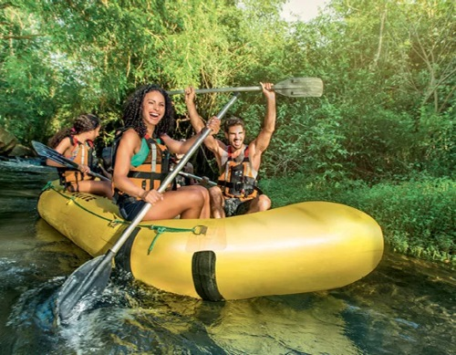
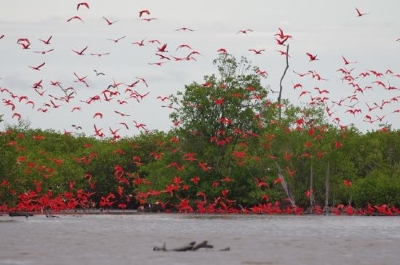
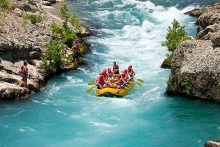
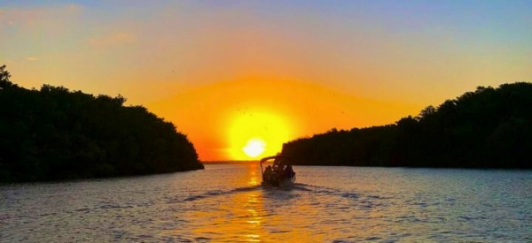

Rafting Família - Nível Fácil
Ideal para iniciantes e crianças a partir de 8 anos. Navegamos por corredeiras
leves e
apreciamos a natureza do Rio Magú. Segurança total com nossos guias
certificados.
Incluso: Colete, capacete, remo e guia.

Rafting Delta - Nível Fácil
A Revoada dos Guarás é um espetáculo natural único, onde milhares de aves de
plumagem vermelha
tingem o céu ao entardecer no Delta do Parnaíba.
Incluso: Colete, capacete, remo e guia.

Rafting Aventura - Nível Difícil
Para quem busca adrenalina! Enfrente corredeiras nível 3 e 4 com muita emoção.
Duração
maior e trechos mais desafiadores. Recomendado para maiores de 14 anos.
Incluso: Equipamento completo, lanche e guia especializado.

Pôr do Sol no Delta
O passeio mais tranquilo e contemplativo. Saímos no fim da tarde para ver o pôr
do sol no
Delta do Parnaíba. Parada para fotos e lanche. Experiência única!
Incluso: Equipamento, lanche e fotógrafo.